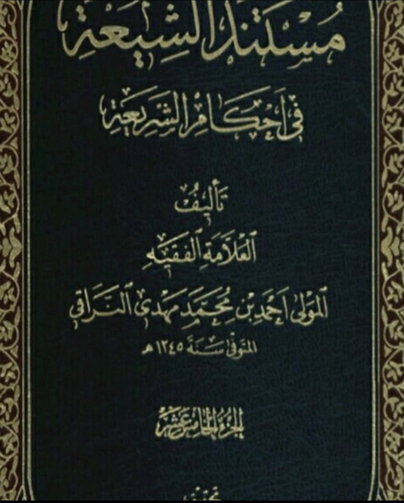
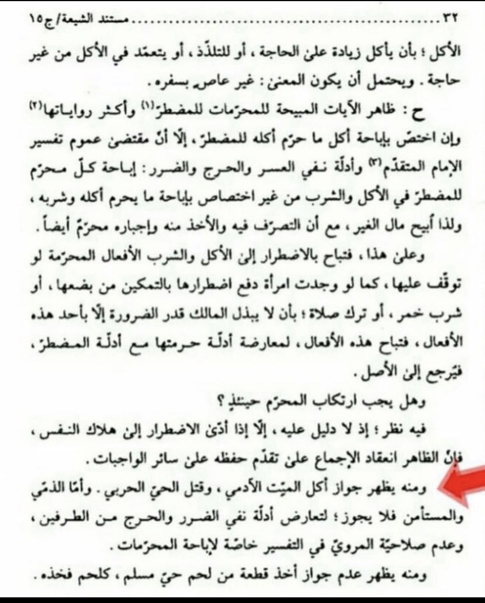

Shia Shaykh Ahmad An-Naraqi said: “And from this it is clear that it is permissible to eat the dead human being,
and to kill the living Harbi (the hostile disbeliever). But for the Dhimmi and the Musta'man, this is not allowed."
Mustanad Al-Shi'a 15/32